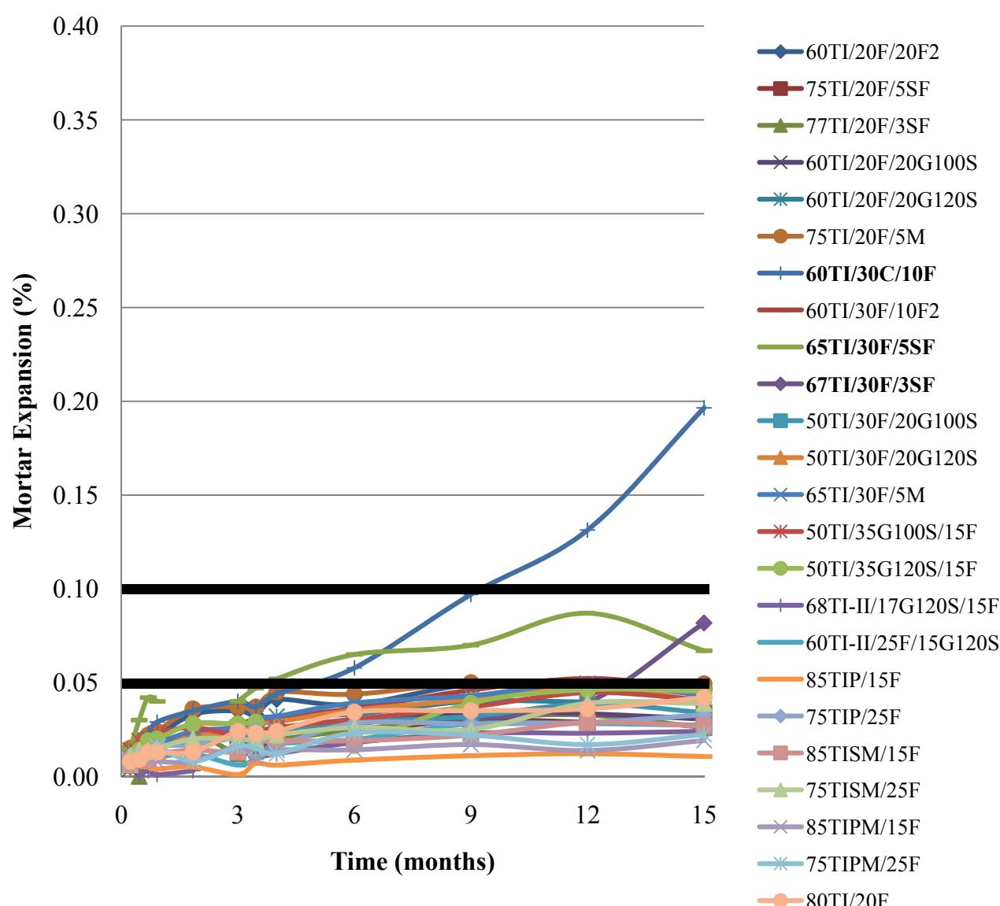
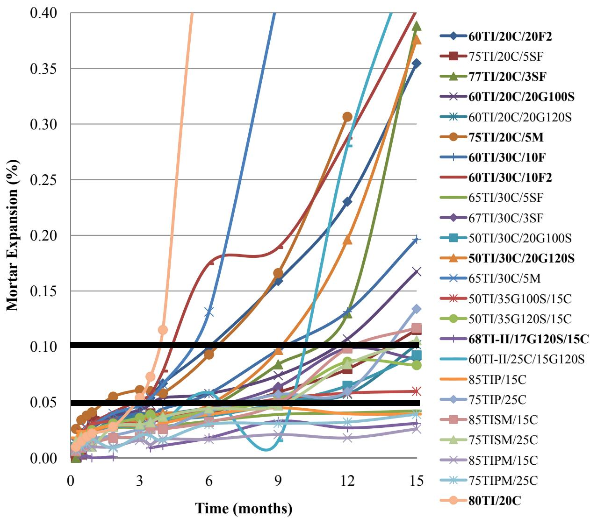

Sulfate Attack
Sulfate attack is a durability degradation process in which external sulfate ions interact with the aluminate phases of cementitious materials to generate expansive reaction products. The primary chemical mechanisms involve the formation of minerals such as ettringite, gypsum, and thaumasite through reactions between sulfates and hydrated cement compounds [2] [3]. These expansive products increase in volume within the pore structure, creating internal stresses that lead to cracking, spalling, loss of strength, and overall structural deterioration [2] [3].
Sources (14)
Key findings
- Secondary ettringite formation filled the entrained air-void system, compromising freeze-thaw protection and reducing concrete durability [3] [4] [6].
- Class F fly ash provided strong mitigation of sulfate expansion, whereas Class C fly ash generally performed poorly and required specific testing before use [8] [11].
- Internal sources of sulfates, such as calcium sulfide dissolution in blast-furnace-slag aggregates, can drive secondary ettringite formation and deterioration without external sulfate ingress [3] [6].
- Pure IPM cement exhibited superior sulfate resistance with minimal expansion compared to mixtures containing Class C fly ash, which developed severe cracking over time [11].
Sulfate Resistance Mechanisms and Testing of Concrete Materials
Sulfate attack is a durability issue where external sulfate ions react with cement paste components to form expansive minerals like ettringite, gypsum, and thaumasite [2]. While some expansion occurs during normal hydration, excessive or delayed formation of these reaction products generates internal stresses that lead to cracking, spalling, and strength loss in concrete structures [2] [3].
Research problem — Conventional sulfate soundness tests often incorrectly reject recycled concrete aggregates, creating a barrier to their sustainable reuse despite their potential durability benefits [12]. Many ternary cementitious blends lack guaranteed resistance to sulfate attack, leading to excessive expansion, cracking, and strength loss that compromise the long-term service life of infrastructure [1] [2] [8] [9] [11] [13]. Internal sulfate reactions from supplementary materials can degrade the air-void system and trigger workability issues, further accelerating deterioration and premature pavement failure [3] [4] [6].
The figure below illustrates the ASTM C1012 sulfate mortar expansions observed in mixtures containing Type IP(6) cement.
 ASTM C1012 sulfate mortar expansions of mixtures containing Type IP(6) cement [11]
ASTM C1012 sulfate mortar expansions of mixtures containing Type IP(6) cement [11]
The figure displays the results of ASTM C1012 sulfate resistance testing, plotting mortar expansion percentages over a period of fifteen months for various cementitious mixtures.
State of the art — Current practice relies on standardized mortar bar testing, such as ASTM C1012, to evaluate sulfate resistance by monitoring expansion against specific limits for moderate and high durability classes [11]. Mitigation strategies emphasize the use of supplementary cementitious materials like Class F fly ash, slag, and silica fume to refine pore structure and reduce permeability, with performance-based specifications increasingly favoring optimized ternary blends over prescriptive mix designs [1] [2] [7] [8]. Diagnostic protocols now integrate petrographic examination and air-void analysis to detect secondary ettringite formation that blocks entrained air voids, treating this degradation mechanism as a critical factor alongside traditional freeze-thaw criteria in durability assessments [4].
The figure below illustrates the ASTM C1012 sulfate mortar expansion results for mixtures incorporating Class F2 fly ash.
 ASTM C1012 sulfate mortar expansions of mixtures containing Class F2 fly ash [11]
ASTM C1012 sulfate mortar expansions of mixtures containing Class F2 fly ash [11]
The figure displays a line chart plotting Mortar Expansion (%) against Time (months) for various cementitious mixtures.
Findings from the reports
- Ternary blends containing Class F fly ash demonstrated superior sulfate resistance by maintaining expansion well below the moderate-resistance threshold, whereas blends with Class C fly ash exhibited severe cracking and fracture due to excessive expansion [11].
- Pure IPM cement exhibited the best sulfate resistance among tested binders, showing minimal expansion that remained stable over fifteen months [11].
- Class F fly ash provided strong mitigation of sulfate-induced expansion in ternary mixes, while Class C fly ash blends required further combination testing before field use due to poor performance [8].
- Sulfate attack manifested as secondary ettringite deposits filling entrained air voids in concrete cores, which compromised the intended air-void system and reduced freeze-thaw durability [3].
- Blast-furnace slag aggregate acted as an internal source of sulfur that promoted significant ettringine formation within concrete pores, even in the absence of external sulfate sources [3].
- Secondary mineral sulfate deposits filled the concrete’s air-void system due to calcium sulfide dissolution, reducing freeze-thaw protection through an internal sulfate-attack mechanism [6].
- Sulfate-related reactions generated abundant secondary ettringite adjacent to pavement joints, filling fine entrained air voids and increasing the spacing factor beyond limits for freeze-thaw durability [4].
- Excessive secondary ettringite deposition destroyed the intended freeze-thaw protection of the air-void system, turning concrete into a non-durable material even in the absence of prior distress [4].
- Recommended modifying the test protocol by using magnesium sulfate instead of sodium sulfate or adjusting acceptance limits to enable more realistic evaluation and broader adoption of recycled concrete aggregate [12].
Novelty & rigor — Novelty lies in developing performance-based durability assessments that integrate modified soundness protocols for recycled aggregates or embed accelerated laboratory tests directly into mix-design software, moving beyond prescriptive acceptance limits [9] [12]. Distinctive methodological contributions include the systematic evaluation of extensive ternary cementitious systems using chemical normalization to create predictive contour maps, as well as the diagnostic merging of permeability testing with petrographic analysis to detect secondary ettringite formation within air voids [2] [4]. Reproducibility is ensured by following detailed experimental matrices for mortar and concrete specimens using standardized exposure methods, or by applying specific petrographic protocols to characterize secondary mineral formation in hardened cores [1] [2] [4].
Reported values
| Parameter | Value | Context | Source |
|---|---|---|---|
| entrained air void space percentage | 3.5% | after infilling by secondary ettringite | [4] |
| spacing factor | 0.127mm (0.005”) mm (in) | original, before infilling by secondary ettringite | [4] |
| spacing factor | 0.229mm (0.009”) mm (in) | after infilling by secondary ettringite | [4] |
| average expansion | 0.08% | mixture design 65TI/30F2/5M (bottom bar 1-041-2-01) at 15 months | [11] |
| expansion | 0.02% | 100% IPM cement at 6 months | [11] |
| expansion | < 0.1% | mixture designs at 6 months | [11] |
| maximum allowable expansion for moderate sulfate resistance | 0.10% | ASTM C1012 at 6 months | [11] |
Petrographic analyses confirm that sulfate attack manifests through the formation of secondary ettringite, which fills entrained air voids and compromises the concrete’s freeze-thaw protection system. The source of sulfates driving this internal deterioration varies by case, originating from blast-furnace slag aggregates or calcium sulfide dissolution in some instances, while deicing salt solutions supply ions in others. Despite these mechanistic differences, the collective evidence indicates that specific supplementary cementitious materials like Class F fly ash effectively mitigate expansion, whereas Class C fly ash requires further combination testing before field use due to its tendency to reduce durability. [3] [4] [6] [8] [11]
The figure below illustrates the ASTM C1012 sulfate mortar expansion results for mixtures incorporating Class F fly ash.

ASTM C1012 sulfate mortar expansions of mixtures containing Class F fly ash [11]The figure displays a line chart plotting the percentage of mortar expansion over time for various cementitious mixtures.
Implications — Specifications for recycled concrete aggregate should be revised to reflect actual durability rather than disqualifying materials based on standard soundness tests that do not accurately predict performance in engineered mixes [12]. Designers must prioritize the selection of specific supplementary cementitious materials, such as Class F fly ash or appropriate slag blends, while avoiding those like Class C fly ash that may not provide adequate sulfate resistance without mix-specific verification [8] [11]. Concrete specifications should favor low-alkali cements and supplementary materials to mitigate internal sulfate attack risks associated with calcium sulfide dissolution, particularly when combined with alkali-silica reaction [6]. To preserve freeze-thaw durability, designers must control sulfate sources that promote secondary ettringite formation and ensure effective joint drainage to prevent the infilling of air-void systems by expansive minerals [3] [4].
The figure below illustrates the ASTM C1012 sulfate mortar expansions observed in mixtures containing Class C fly ash.

ASTM C1012 sulfate mortar expansions of mixtures containing Class C fly ash [11]The figure displays a line chart plotting the percentage of mortar expansion against time in months for various cementitious mixtures.
Limitations — Standard soundness tests using sodium sulfate may fail recycled concrete aggregates, necessitating protocol adjustments such as switching to magnesium sulfate or relaxing criteria [12]. Short-term expansion limits do not guarantee long-term durability, as some mixes showing acceptable results initially exhibit severe cracking in later stages [11]. The specific behavior of blends containing certain fly ash classes remains uncertain and requires verification for each mixture before deployment [8]. The exact role of sulfate-related ettringite in cracking is unclear, with small sample sizes and overlapping distress mechanisms preventing definitive conclusions about its significance [3]. Current findings on internal sulfate attack are provisional due to unquantified permeability and the need for controlled studies to separate interacting chemical effects [6]. Uncertainty regarding the specific source of sulfates limits confidence in attributing joint distress solely to external attack, as ettringite formation can occur without prior visible damage [4].
The figure below illustrates how secondary ettringite fills air void spaces in concrete paste near areas of joint distress.
 Micrograph of concrete paste showing secondary ettringite filling air voids near joint distress. [4]
Micrograph of concrete paste showing secondary ettringite filling air voids near joint distress. [4]
The image displays a photomicrograph of concrete containing various aggregate particles embedded in a cementitious matrix with numerous small, circular pores.
Evidence: 11 reports (6 primary)
Related concepts
In this hierarchy
- Parent: Materials-Related Distress (MRD)
- Sibling: Alkali-Silica Reaction
- Sibling: D-Cracking
- Sibling: Ettringite Fill
- Sibling: Premature Joint Deterioration
Related by shared evidence
- Supplementary Cementitious Materials — shares 13 reports
- Alkali-Silica Reaction — shares 12 reports
- Fly Ash — shares 12 reports
- Air Entraining Agent — shares 11 reports
- Drying Shrinkage — shares 11 reports
- Cement Hydration — shares 10 reports
- Concrete Materials & Mixtures — shares 10 reports
- CP Tech Center Reports — shares 10 reports
Similar topics
- Blended Cement
- Freeze-Thaw Durability
- Supplementary Cementitious Materials
- Fly Ash
- Low-Permeability Concrete
- Ground Granulated Blast-Furnace Slag
- Ternary Mixture
- Air Entraining Agent
References
- S. Schlorholtz, "Development of Performance Properties of Ternary Mixes: Scoping Study (Phase 1)," Center for Portland Cement Concrete Pavement Technology, Iowa State University, Ames, IA, Rep. DTFH61-01-X-00042 (Project 13), 2004. [Online]. Available: https://www.cptechcenter.org/wp-content/uploads/2018/03/ternary_mixes.pdf
- P. Tikalsky, V. Schaefer, K. Wang, B. Scheetz, T. Rupnow, A. St. Clair, M. Siddiqi, and S. Marquez, "Development of Performance Properties of Ternary Mixes, Phase 1," Center for Transportation Research and Education, Ames, IA, Rep. TPF-5(117), 2007. [Online]. Available: https://www.intrans.iastate.edu/research/completed/development-of-performance-properties-of-ternary-mixes-phase-1/
- J. Grove, F. Bektas, and H. Gieselman, "Southeast Michigan Local Road Concrete Pavement Durability Study," National Concrete Pavement Technology Center, Ames, IA, 2006. [Online]. Available: https://www.cptechcenter.org/wp-content/uploads/2018/03/mi_pavement_durability.pdf
- P. Taylor, L. Sutter, and J. Weiss, "Investigation of Deterioration of Joints in Concrete Pavements," National Concrete Pavement Technology Center, Ames, IA, Rep. TPF-5(224), 2012. [Online]. Available: https://www.intrans.iastate.edu/wp-content/uploads/2018/03/joint_deterioration_penetrating_sealers_field_study_w_cvr.pdf
- J. T. Kevern, G. Adil, P. Taylor, S. Sadati, and K. Wang, "Evaluation of Penetrating Sealers for Concrete," National Concrete Pavement Technology Center, Iowa State University, Ames, IA, Rep. TR-765, 2022. [Online]. Available: https://www.intrans.iastate.edu/wp-content/uploads/2022/06/concrete_penetrating_sealers_eval_w_cvr.pdf
- J. Grove, G. Fick, T. Rupnow, and F. Bektas, "Material and Construction Optimization for Prevention of Premature Pavement Distress in PCC Pavements," National Concrete Pavement Technology Center, Ames, IA, Rep. TPF-5(066), 2008. [Online]. Available: https://www.intrans.iastate.edu/wp-content/uploads/2018/03/mco-final.pdf
- P. Taylor, F. Bektas, E. Yurdakul, and H. Ceylan, "Optimizing Cementitious Content in Concrete Mixtures for Required Performance," National Concrete Pavement Technology Center, Ames, IA, 2012. [Online]. Available: https://www.intrans.iastate.edu/wp-content/uploads/2018/03/taylor_ocm_w_cvr2.pdf
- P. Taylor, P. Tikalsky, K. Wang, G. Fick, and X. Wang, "Development of Performance Properties of Ternary Mixtures: Field Demonstrations and Project Summary," National Concrete Pavement Technology Center, Ames, IA, Rep. TPF-5(117), 2012. [Online]. Available: https://www.intrans.iastate.edu/wp-content/uploads/2018/03/ternary_final_w_cvr.pdf
- D. Harrington, R. Rasmussen, D. Merritt, T. Cackler, and P. Taylor, "Long-Term Plan for Concrete Pavement Research and Technology—The Concrete Pavement Road Map (Second Generation): Volume II, Tracks (FHWA-HRT-11-070)," National Center for Concrete Pavement Technology, Iowa State University, Ames, IA, 2012. [Online]. Available: https://www.fhwa.dot.gov/publications/research/infrastructure/pavements/pccp/11070/11070.pdf
- B. Shafei, P. Taylor, B. Phares, and M. Kazemian, "Fiber-Reinforced Concrete for Bridge Decks," Bridge Engineering Center, Iowa State University, Ames, IA, Rep. TR-767, 2021. [Online]. Available: https://www.intrans.iastate.edu/wp-content/uploads/2021/12/fiber-reinforced_concrete_in_bridge_decks_w_cvr.pdf
- P. Tikalsky, P. Taylor, S. Hanson, and P. Ghosh, "Development of Performance Properties of Ternary Mixtures: Laboratory Study on Concrete," National Concrete Pavement Technology Center, Ames, IA, Rep. TPF-5(117), 2011. [Online]. Available: https://www.intrans.iastate.edu/research/completed/development-of-performance-properties-of-ternary-mixtures-laboratory-study-on-concrete/
- S. Garber, R. Rasmussen, T. Cackler, P. Taylor, D. Harrington, G. Fick, M. Snyder, T. Van Dam, and C. Lobo, "A Technology Deployment Plan for the Use of Recycled Concrete Aggregates in Concrete Paving Mixtures," National Concrete Pavement Technology Center, Ames, IA, 2011. [Online]. Available: https://www.intrans.iastate.edu/wp-content/uploads/2018/03/RCA-Draft-Report_final-ssc.pdf
- K. Wang and Z. Ge, "Evaluating Properties of Blended Cements for Concrete Pavements," Department of Civil, Construction and Environmental Engineering, Iowa State University, Ames, IA, 2003. [Online]. Available: https://www.intrans.iastate.edu/wp-content/uploads/2018/03/blended_cements-1.pdf
- A. Daghighi, P. Taylor, H. Ceylan, and Y. Zhang, "Impacts of Internally Cured Concrete Paving on Contraction Joint Spacing Phase II," National Concrete Pavement Technology Center, Iowa State University, Ames, IA, Rep. TR-746, 2021. [Online]. Available: https://www.cptechcenter.org/wp-content/uploads/2021/05/IC_concrete_paving_impacts_phase_II_field_impl_w_cvr.pdf
Feedback on this page